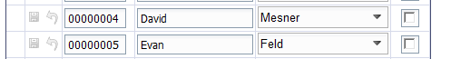

Grid Component - Edit-combo Box The cosmetics of the edit-combo box have been improved. The image below shows how the edit-combo renders in V11. In V10, the button was rendered outside the control. 